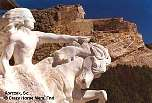

You’ll soon discover that Crazy Horse was a brave warrior. He also fought in many battles.
|
|
You’ll soon discover that Crazy Horse was a brave warrior. He also fought in many battles. |
| Are you aware hat Crazy Horse was born in 1845 on the Republican River? He was said to a rather handsome man. His childhood nickname was Curly. His best friend was Hump. Everybody called them “the grizzly and bear,” because Hump was much older than Crazy Horse. |
| Crazy Horse father was a physcial trainer.His
mother was a Brule. His mother was the sister a Spotted Tail. Crazy Horse
mother died when Crazy Horse was young. His father took his wife sister as
a wife to help raise Crazy Horse. |
| When Crazy Horse was five years old they got
snowed in. They were short on food. His father was a hunter. He went and
got two antelopes. Crazy Horse got on his pet pony and rode through the camp.
He told every old men and women to come to come to his mother teepee for
meat.
|
| When Crazy Horse was twelve he saved his brother from attacking bear by pushing him up into the nearest tree. Crazy Horse sprang upon the back of a the horses. He also killed a buffola. |
| When Crazy
Horse was thirteen he stoled a horse from the Crow Indians. At sixteen Crazy
Horse was bearing his father name. He rode for the first time as an adult
warriors. Crazy Hore joined the war party against the Gros Ventres.
He led his first party before he was twenty. |
| Most people called Crazy Horse, Tashunka Witko. He was in the tribe Oqala-Brule Sioux. Crazy Horse earned his reputation among the Lakota, not only by his skill and darning in the battle, but also his fierce determinations. |
| On August 19,1854 he was in the CONQUERING BEAR’s camp in Northern Wyoming. The Brule leader was killed in the GRATTAN fight. |
| December
1866 the Cheyeene and the Souix combained to challenges Fort Phil Kearny,
where Crazy Horse was the leader. In 1876, the War Department ordered all
the Lakota on their reservation. He became the leader of the resistance.
They refused to go on the reserations. Troops attacked their camp on the
Power River. Crazy Horse was victorious. That was where he meet his first
marriage, to a Cheyeene woman. |
| When they were war against the Sioux, Crazy Horse and his brother was in it. They killed two of the enemy and it made a good retreat. Crazy Horse younger and only brother was killed. |
| His Greatest Battle was Little BigHorn. The camp scattered for three miles along the Level River Bottom On June 17, the scouts came and reported the advance has begun, by a large body of the troops led by leader General Cook. The war party went into the night, so the enemy could not see them. Within three or four miles from camp the came unexpectedly upon some of General Cook’s Crow scouts. They both exchange their shoots. They went back to Cook’s camp. Again and again Crazy Horse took his bravest men and attempt to bring them into the open. They withdrew that afternoon. Crazy Horse came out with his most famous victory |
| July 1877 he prevailed upon to come to Fort Robinson, Nebraska with several thousand Indians. His wife was is critically ill. He took her to his parents at Spotted Tail agency. They saw him riding with his wife, but did not arrest him. Crazy Horse last words was “Another white man trick! Let me go! Let me go fighting!” He only has a knife to defend himself, but the solider thrust him through with a knife, and wound was mortal, and he died that night. His father singing the death song over him and carry his body. He is buried somewhere in the Bad Lands. |
| Crazy
Horse died as one of the ablest and truest American Indian. Crazy Horse was
33 years old. He has a memorial in the Black Hills, South Dakota.
|
| Finally, I hope I taught everyone about Crazy Horse. Now you know that he was the bravest warrior. Now how many battle did Crazy Horse fought in. |
| " My Lands are where my dead lie." |
|

|
| Nicole Ronnebaum |
| Rossville Jr. High |
| 2002 plains Project |
| Bibliography |